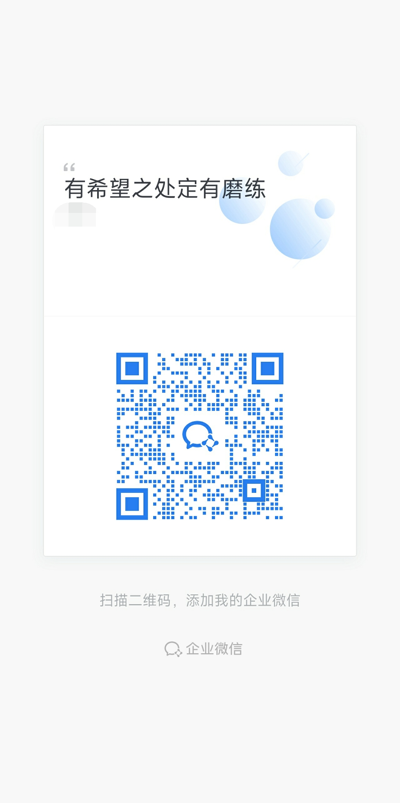

第一次联系，不用先把整个家讲完整。
你不需要先整理出一套完整材料，也不用先证明自己已经做了多少。你只要先把现在最反复、最难受、最不知道从哪里动的那一件事带来，我会先帮你看：这件事现在更像卡在什么地方。
你不需要先整理出一套完整材料，也不用先证明自己已经做了多少。你只要先把现在最反复、最难受、最不知道从哪里动的那一件事带来，我会先帮你看：这件事现在更像卡在什么地方。
不用很完整，先让我知道大致年龄阶段，方便判断这是发展中的问题，还是已经在往回退。
比如一说就炸、完全不去学校、整天躲在房间、每天都在手机和作息上拉扯。
不用总结经验，只要告诉我你们试过哪些做法，哪里越做越乱，哪里似乎稍微有效。
扫码进家长群，先把最卡的一件事带进来。你不用把自己讲得很完整，也不用先把孩子讲得很标准。先把现场说清一点，就够开始。
进来以后，可以直接说孩子年龄、现在最卡什么、你们已经试过什么。我会先帮你判断，这件事更像卡在哪一层。
如果你更担心的是孩子整个人都在往回退，比如越来越不说话、不出门、不碰现实，也可以直接加我个人企业微信。我们会先判断，现在适不适合往“重新开始”的那条线走。

你可以直接说最明显的退行状态，不用先整理成一篇完整说明。
如果你现在不方便扫码，或者更习惯先用文字把最卡的一件事写下来，也可以先用表单或邮件联系。仍然不用写完整，只要把最难受的那个现场写出来就够了。